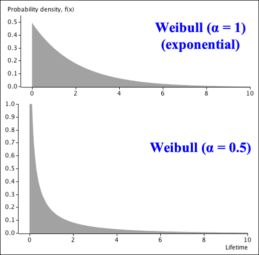
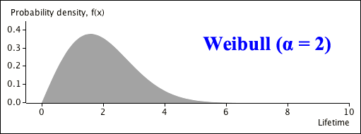

Mean and variance of Weibull distribution
If a random variable \(X\) has a Weibull distribution with probability density function
\[ f(x) \;\;=\;\; \begin{cases} \alpha \lambda^{\alpha} x^{\alpha - 1} e^{-(\lambda x)^{\alpha}} & x \gt 0 \\[0.4em] 0 & \text{otherwise} \end{cases} \]then its mean and variance are
\[ E[X] \;=\; \frac 1 {\lambda} \Gamma\left(1 + \frac 1 {\alpha}\right) \spaced{and} \Var(X) \;=\; \frac 1 {\lambda^2} \left( \Gamma\left(1 + \frac 2 {\alpha}\right) - \Gamma\left(1 + \frac 1 {\alpha}\right)^2\right) \](Proved in full version)
We now show how the shape of the Weibull distribution is affected by its two parameters. The two distributions below both have mean \(E[X] = 2\).

When \(\alpha = 0.5\),
\[ h(x) \;\;\propto\;\; x^{\alpha - 1} \;\;=\;\; \frac 1{\sqrt{x}}\]When \(x \approx 0\), the hazard rate is extremely high, making the item very likely to fail near the start of its life. However the hazard rate drops as the item gets older (as \(x\) increases) so as the item survives longer, it becomes less likely to fail — some items survive very long times, well beyond the upper end of the axis in the diagram.

In this Weibull distribution, the hazard rate starts low then increases over time.